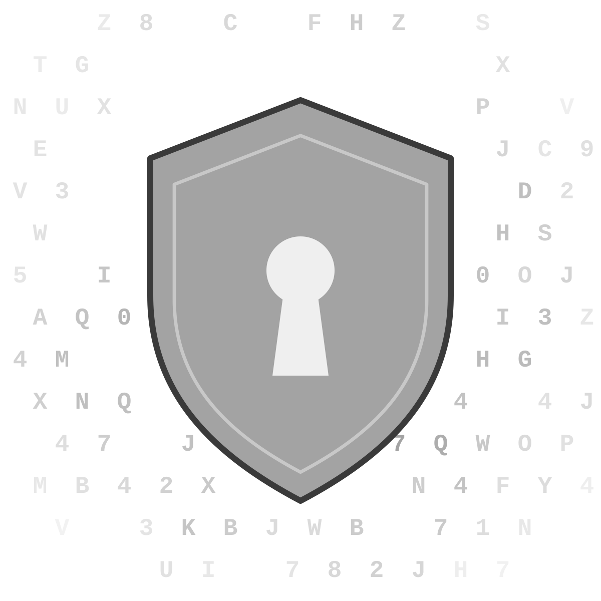

Let's Talk
Cryptography
What Is Cryptography?
Cryptography is the process of encoding and decoding information so that only the recipient can view it. The art of cryptography has existed for thousands of years and continues to be used today in banking, IT, and ecommerce.
Cryptography can first came to be in the ancient Egypt and remains essential to securing information and preventing it from being read by untrusted parties. It uses algorithms and mathematical concepts to transform messages into ciphers using cryptographic keys and digital signing to protect data privacy.
There are many types of cryptographic algorithms of varying complexity and security, depending on the type of communication and the sensitivity of shared data. This website explores a few basic ciphers, such as Caesar Cipher, Vigenère Cipher, and Polybius Cipher.
Source: Fortinet
